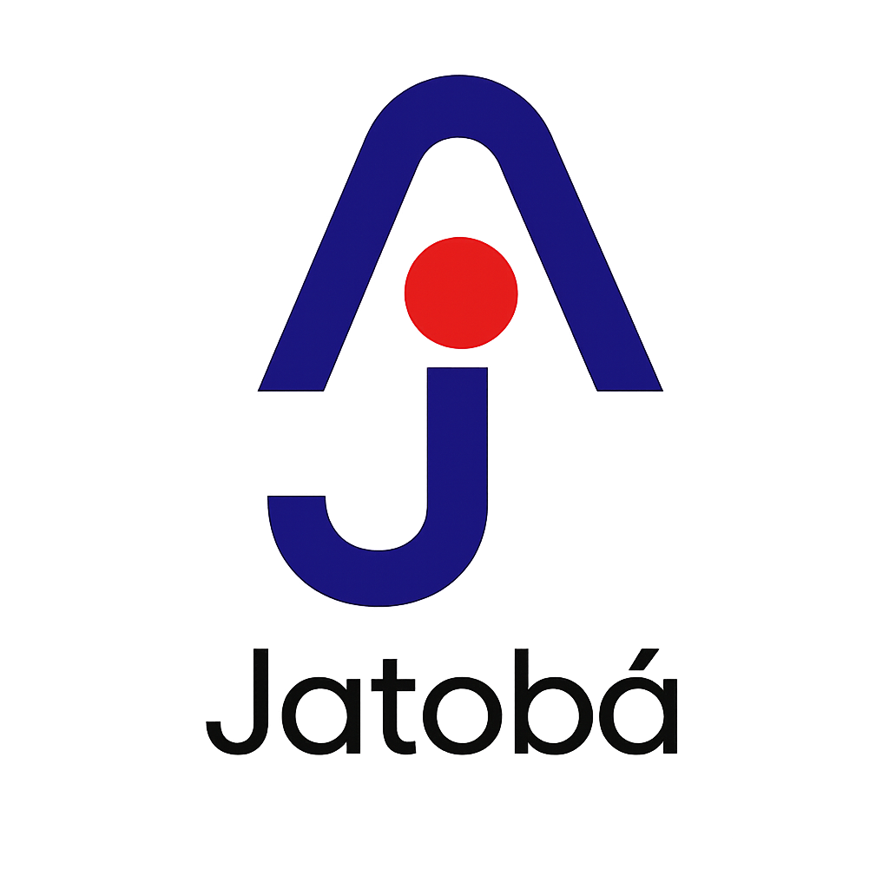

🌱 Painel Gerencial - Qualidade de Plantio
Aguardando Excel Local...
Acompanhamento e Cobertura de Avaliação
Análises de Plantio (Inicial)
0
Amostras colhidas logo após plantadeira
Análises até Germinação
0
Amostras com estande final avaliado
% Talhões Avaliados (Completos)
0%
0 de 0 talhões com germinação lida
Indicadores de Qualidade Operacional
1. Sementes / Metro
0,0
🎯 Meta: Configurando...
2. Profundidade
0,0 cm
🎯 Meta: Configurando...
3. Plantas / Metro
0,0
🎯 Meta: Configurando...
4. Plantas Duplas
0,0%
🎯 Meta: Configurando...
5. Germinação
0,0%
🎯 Meta: Configurando...